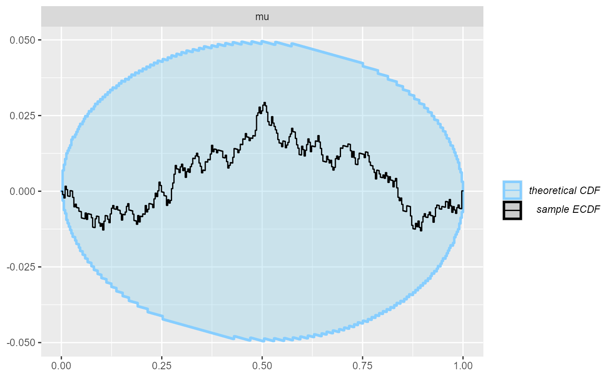
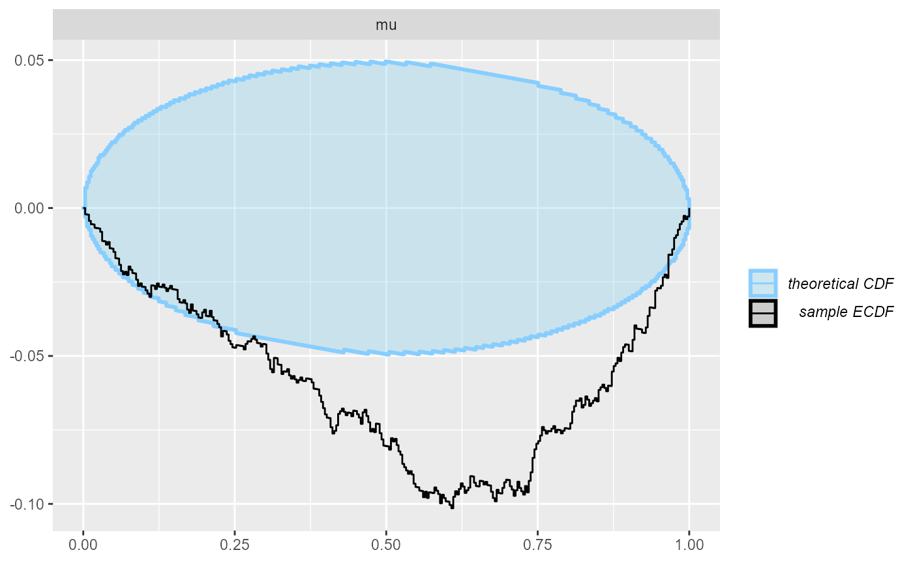
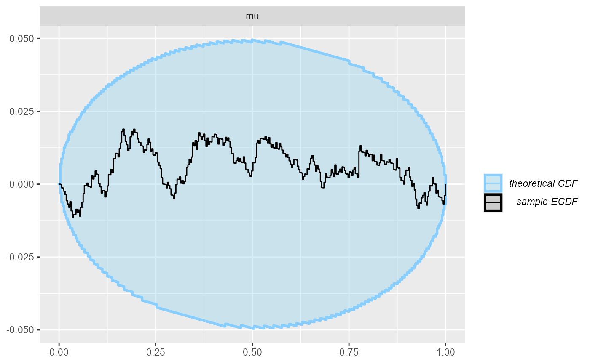

rejection_sampling.Rmd
library(SBC)
# use_cmdstanr <- TRUE # Set to false to use rstan instead
#
# if(use_cmdstanr) {
# library(cmdstanr)
# } else {
# library(rstan)
# }
library(cmdstanr)## This is cmdstanr version 0.4.0.9000## - Online documentation and vignettes at mc-stan.org/cmdstanr## - CmdStan path set to: C:/Users/Martin/Documents/.cmdstanr/cmdstan-2.27.0## - Use set_cmdstan_path() to change the path## Warning: package 'bayesplot' was built under R version 4.0.5## This is bayesplot version 1.8.1## - Online documentation and vignettes at mc-stan.org/bayesplot## - bayesplot theme set to bayesplot::theme_default()## * Does _not_ affect other ggplot2 plots## * See ?bayesplot_theme_set for details on theme setting## This is posterior version 1.0.1.9000##
## Attaching package: 'posterior'## The following object is masked from 'package:bayesplot':
##
## rhat## The following objects are masked from 'package:stats':
##
## mad, sd, varHow does rejection sampling affect the validity of SBC?
TODO: copy math and ideas from https://discourse.mc-stan.org/t/using-narrower-priors-for-sbc/21709/6?u=martinmodrak
We’ll use a very simple model throughout this vignette:
stan_code <- "
data {
int<lower=0> N;
real y[N];
}
parameters {
real mu;
}
model {
mu ~ normal(0, 2);
y ~ normal(mu, 1);
}
"
backend <- SBC_backend_cmdstan_sample(cmdstan_model(write_stan_file(stan_code)), iter_warmup = 800, iter_sampling = 800)And use a matching generator.
N <- 30
generator <- SBC_generator_function(function() {
mu <- rnorm(1, 0, 2)
list(
parameters = list(mu = mu),
generated = list(N = N, y = rnorm(N, mu, 1))
)
})So we expect the SBC to pass even with a large number of fits.
set.seed(2323455)
datasets <- generate_datasets(generator, 1000)
results <- compute_results(datasets, backend)## - 3 (0%) fits had at least one Rhat > 1.01. Largest Rhat was 1.013.## Not all diagnostics are OK. You can learn more by inspecting $default_diagnostics, $backend_diagnostics and/or investigating $outputs/$messages/$warnings for detailed output from the backend.
plot_ecdf_diff(results)
Indeed, all looks good.
Now let us modify the generator to reject based on parameter values. This should fail.
generator_reject_param <- SBC_generator_function(function() {
repeat {
mu <- rnorm(1, 0, 2)
if(mu > 3) {
break
}
}
list(
parameters = list(mu = mu),
generated = list(N = N, y = rnorm(N, mu, 1))
)
})
set.seed(21455)
datasets_reject_param <- generate_datasets(generator_reject_param, 1000)
results_reject_param <- compute_results(datasets_reject_param, backend)## - 6 (1%) fits had at least one Rhat > 1.01. Largest Rhat was 1.012.## Not all diagnostics are OK. You can learn more by inspecting $default_diagnostics, $backend_diagnostics and/or investigating $outputs/$messages/$warnings for detailed output from the backend.
plot_ecdf_diff(results_reject_param) Indeed, we see a clear failure.
But what if we reject based on the values of data? This should in theory result in just a constant change in posterior density and not affect SBC. (SBC will however then check only the non-rejected parts of the data space). We will do a relatively aggressive rejection scheme (reject more than 50% of datasets).
generator_reject_y <- SBC_generator_function(function() {
repeat {
mu <- rnorm(1, 0, 2)
y <- rnorm(N, mu, 1)
if(mean(y) > 5) {
break
}
}
list(
parameters = list(mu = mu),
generated = list(N = N, y = y)
)
})
set.seed(369654)
datasets_reject_y <- generate_datasets(generator_reject_y, 1000)
results_reject_y <- compute_results(datasets_reject_y, backend)
plot_ecdf_diff(results_reject_y)
We see that even with quite heavy rejection based on y, SBC to a high resolution passes.